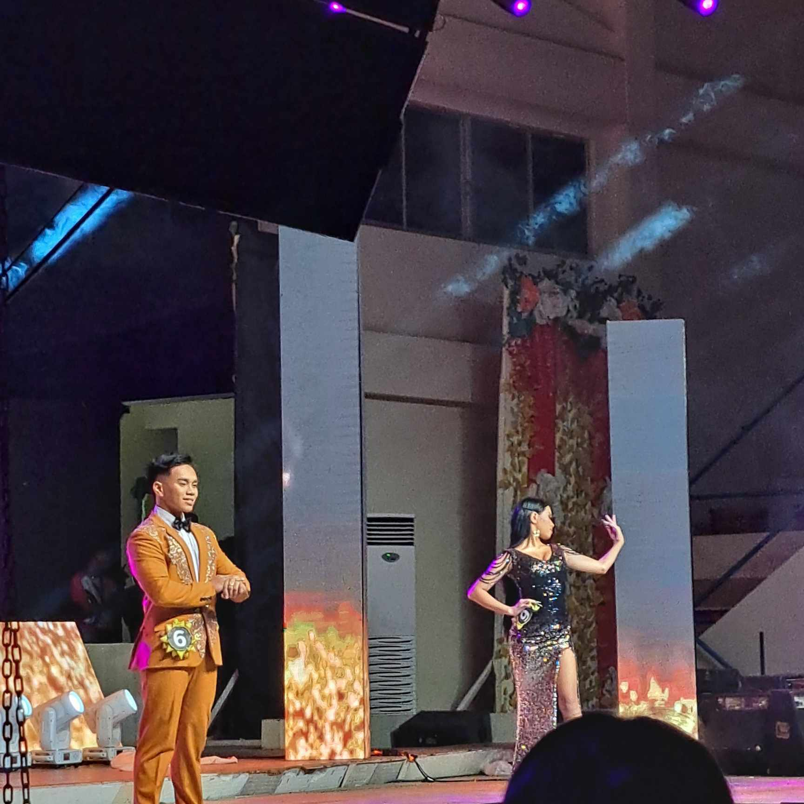

This picture was taken during the first day of Lux Mundis Cup 2023 which is the Badminton tournament, this is also my first match, ICS vs IAS. The flow of the games was good and my opponent was also good and thanked God, I won of this game.

It was also a big previleged for me that I am with these good and talented badminton players of the Institute of Computer Studies, even though we are not lucky enough to win the game, but that's fine with us since we enjoy the game.

It's been a year since I played badminton, it was fun and the same time a lot of pressure. On this day, I placed 4th placer not bad for a first timer who played in college tournament.

Socializing is not my thing anymore, but meeting these new amazing people is such an honor. People who are talented, adorable and of course full of dedication in life.

Not to brag, but this is the part of the dance where my closest people were shocked by my dancing skills because they know me as a lowkey one at school, and it felt so overwhelming that people were praising your dancing skills.

Watching this picture makes me cry because until now I cannot believe that the Insititute of Computer Studies who has a smallest populations did this amazing performance.
So far, this is my favourite part of the Day 3. As a student who is a kpop fan before, this scene feels like a concert especially when the Dj started to play the Blackpink Music's.

This is the part where the candidates are required to show the Fantasy Attire and to be honest I was shocked when I know that the person who made this beautiful attire is Mr. Kian, a first year and talented college student
Even though our candidates didn't make to the top 3 but look our candidates, our handsome and beautiful candidates. The way they walk, smile and post feels so everything to me.
I saw the hardwork of our players, but sadly they didn't make it to the top 3, but that is okay still I am so proud of them for doing and giving their best. .

Thank you for doing you best our mixed doubles, we are so proud of you.

AND FINALLLYYYYY, WE WON! Table Tennis single men. Thank you for your hardwork.
Mr. Shan, received an award during the awarding of Gawad Pelikula in the last day of Luxmundi's Cup 2023.

The Institute of Computer Science just received an award for being the ranked 4th among the six institute in Luxmundi's Cup 2023

The most talented and intelligent students among the other institute.